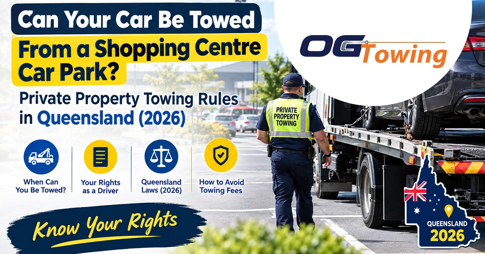

You duck into a Capalaba shopping centre for twenty minutes, come back, and your car is gone. No broken glass, no police tape — just an empty bay and a small sign you never read on the way in. In Queensland, being towed from a car park is not a grey area or a scam: it is a regulated activity with set rules, set paperwork and legally capped fees, and knowing those rules is the difference between paying what you owe and paying whatever you are asked.
This guide explains exactly when a vehicle can be removed from private property in Brisbane and the Redlands, what the operator is allowed to charge you in 2026, what they are not allowed to charge you, and what property owners need to have in place before a single vehicle is touched.
Vehicle stuck somewhere it shouldn’t be, or need one moved legally and quickly? Call Capalaba’s 24/7 tow truck team on 0430 917 742 — any hour, any day.
What counts as “private property towing” in Queensland
Private property towing means removing a vehicle parked on publicly accessible private land — shopping centre car parks, medical centre bays, unit block visitor parking, fast food outlets, gyms, industrial estates and body corporate driveways.
It is governed by the Tow Truck Act 2023 and the Tow Truck Regulation 2024, administered by the Department of Transport and Main Roads. That same framework covers crash-related towing and the towing of police-seized vehicles, and it applies only inside what TMR calls regulated areas.
Importantly, the scheme does not regulate breakdown towing or trade towing. If your car has died in a driveway and you have called for help yourself, none of the rules below apply — that is an ordinary local car towing job, priced by the operator, arranged by you.
Is your suburb inside a regulated area?
The regulated areas are defined using pre-2008 council boundaries, which trips up a lot of people. For South East Queensland drivers, the ones that matter are:
- The City of Brisbane — covering everything from Brisbane CBD and Woolloongabba out to Carindale, Chermside and Sunnybank
- The Shire of Redland — Cleveland, Capalaba, Victoria Point, Redland Bay, Alexandra Hills, Birkdale and Wellington Point
- The City of Logan and the City of Ipswich
- The Shires of Pine Rivers, Caboolture, Beaudesert, Esk, Gatton, Kilcoy, Laidley, Boonah, Maroochy and Noosa
- The Cities of Gold Coast, Caloundra, Redcliffe, Toowoomba and several regional centres
If you were towed from a car park anywhere in Brisbane or the Redlands, you are inside a regulated area and the capped fees below apply to you.
What it legally costs to get your car back in 2026
TMR sets maximum charges by regulation, and those charges rose 3.4% on 1 July 2026 under the government’s indexation policy. All figures include GST.
| Situation | Maximum regulated charge |
|---|---|
| Release from the holding yard | $310.05 |
| On-site release after the vehicle is secured and ready for towing | $186.05 |
| Storage in the holding yard | $31.00 per day |
| Crash towing — first 50km (for comparison) | $447.90 |
| Crash towing — each kilometre beyond 50km | $8.90 |
The on-site release figure is the one worth memorising. If you walk back to your car while it is hooked up but still in the car park, the operator can charge $186.05 to unhook it and hand it back — not the full holding yard release fee.
The maximum charge is not a base rate with extras bolted on. It already includes up to one hour of working time at the scene, transport to the operator’s nearest holding yard with capacity, and 72 hours of storage.
Fees that cannot be charged at all
This is where most disputes are won. Under the regulation, an operator cannot charge you:
- A call-out fee
- A fee for taking steps to locate the vehicle owner
- A fee for travelling to where the vehicle was parked
- A fee for letting you access your vehicle at the holding yard during business hours
There is one more protection that surprises people: the property owner and the motorist cannot both be charged for the same tow. If the centre management has already paid to have your car removed, that cost cannot be passed to you a second time.
Signage decides almost every dispute
Before a vehicle can lawfully be removed, the property owner or occupier needs to have given fair notice. TMR publishes a Private Property Signage Guideline recommending clear, highly visible signs that spell out where people can and cannot park and on what conditions.
Signage that is faded, hidden behind a tree, positioned after the entry point, or vague about consequences is the most common reason a removal is challenged. If you are disputing a tow, photograph the signage from the driver’s approach angle before you leave the car park — not from the bay you were parked in.
There is also a paperwork trail. A towing consent must exist for the removal, the driver must carry a copy while doing the job, and the vehicle owner is entitled to request a copy of it. Police must also be notified after a private property tow, which is why calling Policelink on 131 444 is the fastest way to confirm your car was towed rather than stolen.
Your car is gone — what to do, in order
- Confirm it was towed, not stolen. Look for signage naming the towing operator, then call Policelink on 131 444.
- Photograph the bay and every sign at the entrance and within the car park.
- Ask the operator for the towing consent and an itemised invoice before you pay.
- Check the invoice against the capped fees above. Anything labelled call-out, travel, admin or search is not chargeable.
- Pay under protest if you need the car urgently, then lodge a complaint with TMR. Recovering an overcharge later is easier than recovering a vehicle.
For the wider picture — including council clearway tows, police seizures and abandoned vehicle removals, which each work differently — read our guide on what to do when your car has been towed in Brisbane.
If you own or manage the property
Body corporates, centre managers and business owners in Carindale, Tingalpa, Springwood and across the Redlands deal with the reverse problem: bays taken by people who are not customers, tradies parked across loading zones, and derelict vehicles nobody claims.
Doing it lawfully comes down to four things:
- Compliant signage installed before any removal, following the TMR guideline
- An accredited operator — the tow truck, the driver and the operator all need current TMR accreditation
- Correct paperwork — a properly completed towing consent for every vehicle
- A holding yard approved for storing removed vehicles
Getting any of these wrong exposes the property owner to a claim for unlawful removal, which is a far larger problem than the parking issue you were trying to solve. If the vehicle is simply broken down or abandoned rather than illegally parked, a straightforward tow truck booking is usually the cleaner path — no consent regime, no capped-fee framework, no dispute.
Where the rules bite hardest around Brisbane
Complaints cluster around a predictable set of locations: shopping centre car parks with time-limited free parking, medical precincts, unit blocks in Capalaba and Alexandra Hills where visitor bays are scarce, and mixed-use developments near Woolloongabba and Fortitude Valley where commuters park in retail bays during the day.
If you park in these areas regularly, two habits will save you a few hundred dollars: read the sign at the entry point rather than the one near your bay, and photograph the conditions the first time you use a car park you expect to return to.
Need a vehicle moved the right way?
Whether you have been towed and want to know if the invoice stacks up, or you need a car, ute or van moved legally from your property, OG Towing has handled removals and recoveries across Brisbane, Capalaba and the Redlands for 16 years. Call 0430 917 742 any hour of the day, or request a quote online and we will come back to you fast.
FAQs
It can be removed if the property owner has given fair notice through signage and uses an accredited operator with a properly completed towing consent. You are not entitled to a phone call or a warning notice first. If there was no visible signage at the entry point setting out the parking conditions, the removal may not have been lawful and is worth disputing with TMR.
As at 1 July 2026, the maximum regulated charge is $310.05 for release from the holding yard, plus $31.00 per day for storage. Those amounts include GST. If you reach your vehicle while it is still on site and secured for towing, the maximum drops to $186.05. Call-out, travel and administration fees cannot be added on top.
No. The scheme only operates inside regulated areas, defined using pre-2008 council boundaries. Brisbane, Redland, Logan, Ipswich, Gold Coast, Toowoomba and several regional cities are included. Outside those areas the capped fees and consent requirements do not apply, so the rules governing a removal will be different.
No. The regulation is explicit that a property owner and a motorist cannot both be charged for towing the same vehicle. If centre management has paid for the removal, the operator cannot also invoice you. Ask for the towing consent and the invoice, and raise it with TMR if the charge appears twice.
Breakdown towing and trade towing sit outside the scheme entirely. If your vehicle has failed and you arrange the tow yourself, none of the consent requirements or capped fees apply — you are simply booking a service and agreeing a price. Tell the operator up front that it is a breakdown so the job is handled correctly.